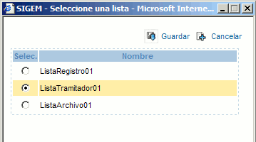

|
A esta página accedemos al pulsar el enlace 'Editar Repositorio' desde el listado de libros.
En esta página podremos elegir la lista de volumenes en la que se almacenarán todos los documentos del libro de registro.
Las listas de volumenes se crean desde la herramienta de 'Administración del Repositorio Documental'.
Para modificar la lista en la que almacenar/recuperar los documentos basta con elegir una del listado y pulsar sobre
el botón  Guardar. Guardar.

Si ya habiamos guardado documentos, únicamente podremos acceder a ellos si los volúmenes de la lista anterior se encuentran en la nueva.
|